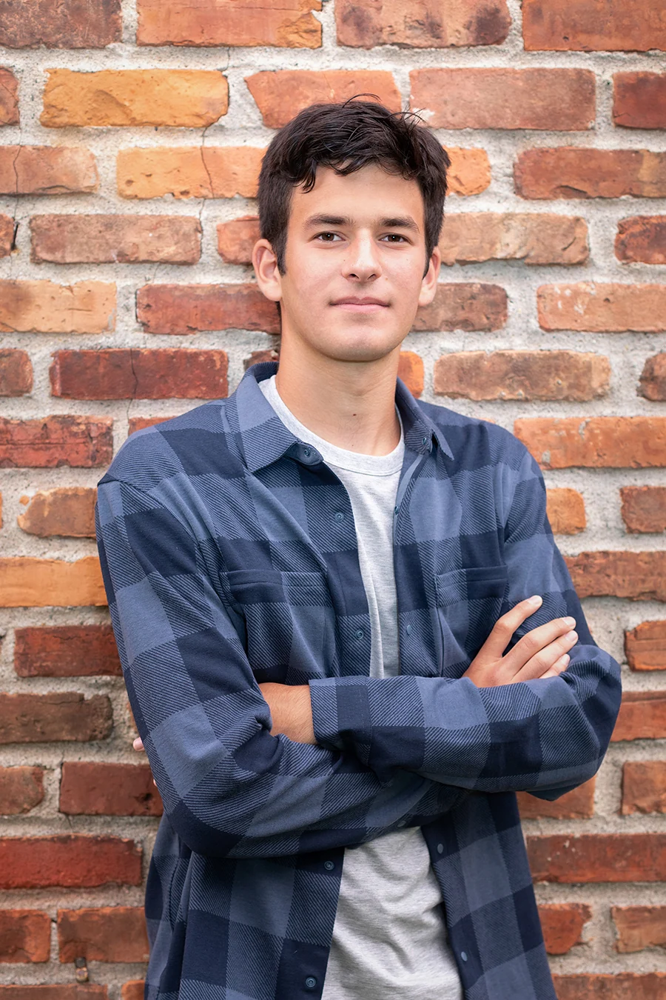

Northwestern University
Weinberg College of Arts & Sciences
Studying economics and data science
Expected graduation: June 2028
ABOUT ME
I’m Ben. Here’s some of the background behind the classes, projects, and résumé.

I can’t imagine growing up any other way.
I’m from the Detroit area and grew up with five siblings. There are inside jokes with years of backstory, plenty of competition, and five very different relationships that mean a lot to me. We can give each other a hard time and still be the first people there when someone needs support.
A lot of the small moments involved helping my younger siblings: multiplication, video games, or making a snack. Family is a major part of who I am, and I cherish the experience of growing up in a house that full.
I learned to solve a Rubik’s Cube at sleepaway camp when I was 11. Since then, I’ve kept coming back to puzzles. There’s something satisfying about a problem that seems impossible at first, until you break it into pieces and start making progress.
I’ve also enjoyed helping other people get to that point. I founded a middle-school tutoring program, and I later worked as a private tutor. Seeing an explanation click for someone is one of my favorite parts of teaching.
Writing for my high-school newspaper gave me another reason to ask questions. I interviewed everyone from physics students to tennis players and school administrators. The best conversations were with people who were absorbed in what they did. In the newsroom, we’d bounce headlines and interview questions off each other; I liked having people around who could make an idea better.
Now I’m a junior studying economics and data science at Northwestern. I’m interested in using what I’m learning to work through real-world problems, and I’m still exploring what that will look like. Spending fall 2026 in Seoul has given me more places to explore, people to learn from, and questions to bring home.
WHERE I’M LEARNING
Weinberg College of Arts & Sciences
Studying economics and data science
Expected graduation: June 2028
Visiting student
August–December 2026
AND THE REST